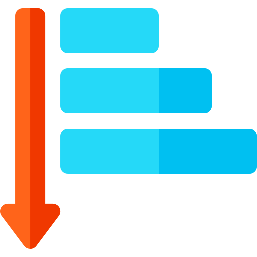

Sorting Visualizer
Size of the Array
Speed of the Algorithm
Generate New Array!
Bubble
Selection
Insertion
Merge
Quick
Indicates the elements are not sorted.
Indicate the elements are being compared.
Highlight the elements of swap operation.
Indicate that the elements are in its final sorted position.